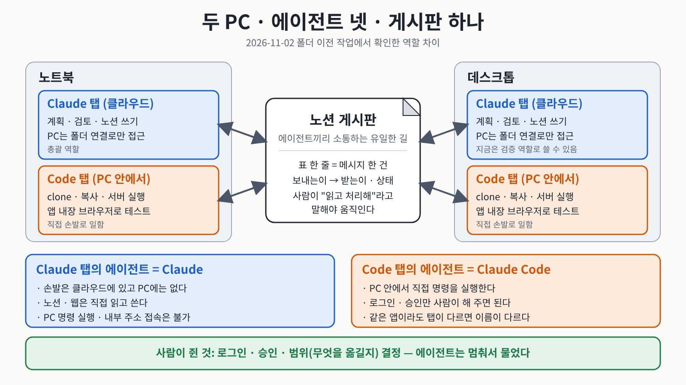

무엇을 만들 것인가?
막연한 아이디어를 문제, 사용자, 기능, 완료조건으로 구체화하려면 무엇이 필요한가?
Vibe Agent가 생각을 요구사항으로 구체화하고, Owner가 방향과 품질을 결정하며, Coding Agent Team이 실제 Software로 구현하는 전체 과정을 설명합니다.
이 강연의 핵심은 Code 작성법이 아니라, 머릿속의 문제와 해결 방법을 Agent가 구현할 수 있는 요구사항으로 바꾸고 완성된 결과를 사람이 검증하는 방법입니다.
Starting Point
생성형AI에게 답변을 받는 일에서 시작해, 반복해서 쓸 수 있는 Program이나 Web Service를 만드는 데까지 나아갈 수 있습니다. 강연은 그 길을 함께 걸어 봅니다.
막연한 아이디어를 문제, 사용자, 기능, 완료조건으로 구체화하려면 무엇이 필요한가?
채팅창 하나로 시작해, 일이 커지면 여러 작업 좌석을 Team으로 구성하고 역할을 나누게 됩니다. 그 이유는 무엇인가?
구현과 검증을 Agent에게 맡겨도 최종 품질과 승인 책임이 사람에게 남는 이유는 무엇인가?
Three Services
OpenAI, Google, Anthropic의 서비스 가운데 바이브코딩에 쓰이는 것만 모았습니다. 이름은 달라도 대화로 시작해, 일이 커지면 내 PC에서 작업하는 환경으로 옮겨 가는 흐름은 같습니다. 각 서비스의 사용설명서는 링크로 열어 볼 수 있습니다.
대화로 시작해, 파일·사이트를 완성하고, 코드까지 맡기는 세 가지 작업 방식입니다.
기획에서 시작해 웹 빌더, 로컬 IDE, 서비스 운영까지 이어집니다.
같은 계정으로 웹과 데스크톱 앱에서 Chat과 Code를 나누어 씁니다.
Growing Path
작은 일은 웹에서 빠르게 시작하고, 일이 커질수록 작업 환경도 함께 옮겨 갑니다. 그 길을 따라가 보면 왜 역할을 나누는 협업 구조가 필요한지 보입니다.
AI Studio는 구글이 제공하는 웹 기반 AI 개발 도구입니다. Playground는 모델에 말을 걸며 시험해 보는 공간이고, Build Mode는 말로 앱을 만들게 하는 기능입니다. 먼저 Playground로 맛을 보고, 마음에 들면 Build Mode로 더 정교하게 만들어 볼 수 있습니다.
문제, 입력, 처리, 결과, 검증을 적은 요구사항 문서를 그대로 넣으면 결과가 훨씬 구체적으로 나옵니다. 한두 번 쓰고 버릴 목적이라면 저는 AI Studio를 권합니다.
제 경험으로는 수정이 늘수록 Build Mode처럼 새로 만들어 덮어쓰는 방식은 한계가 금방 왔습니다. 일반적으로 대화가 길어지면 AI가 매번 읽어야 할 양이 늘어납니다. 이 양을 세는 단위가 토큰(token)이며, AI가 글을 읽고 쓰는 처리 단위입니다. 양이 많아질수록 시간과 비용이 늘고, 앞의 내용을 놓치기 쉽습니다.
| 비교 | 웹 환경 | 내 컴퓨터(로컬) |
|---|---|---|
| 시작 | 빠름 | 준비가 필요함 |
| 구동 | AI는 클라우드에서 돌고, 작업물도 클라우드에 남음 | AI는 똑같이 클라우드에서 돌고, 작업물은 내 컴퓨터에 남음 |
| 오가는 횟수 | 내려받고 올리기를 되풀이함 | 내 폴더에서 바로 수정하고 실행함 |
| 수정 방식 | 새로 만들어 덮어쓰기가 많음 | 필요한 파일의 필요한 부분만 수정 |
| 작업물 | 대화와 서비스 안에 머묾 | 내 폴더의 파일로 남음 |
| 변경 기록 | 이전 상태와 비교하기 어려움 | 버전 기록을 남길 수 있음 |
| 쌓이는 것 | 그때의 결과물 | 규칙과 경험이 파일로 쌓임 |
채팅이나 AI Studio가 더 나은 때도 분명히 있습니다. 한 번 만들고 거의 고치지 않는 화면, 숨길 비밀이 없는 화면, 만들자마자 주소를 나눠야 하는 화면이 그렇습니다. 그래서 질문을 “어느 쪽이 좋은가”에서 “어떤 신호가 오면 옮기는가”로 바꿉니다.
채팅은 맡기면 결과를 받아 오는 수선집이고, IDE는 원본과 도구가 내 곁에 쌓이는 작업장입니다.
네 가지 신호와 사례 보기웹 환경은 처음에 좋은 화면과 구조를 빠르게 만들어 주는 데 강합니다. 그러니 그 장점은 처음에만 쓰고, 이후의 수정은 내 컴퓨터로 내려받아 이어 가는 편이 효율적입니다. 이 과정은 세 단계입니다.
그런데 내려받은 뒤에 무엇으로 수정할까요? 그 사이를 이어 주는 것이 데스크톱 앱입니다.
Claude와 Codex는 각각 데스크톱에 설치하는 앱에서 코딩 Agent를 쓸 수 있습니다. 작업이 복잡해질수록 웹 브라우저보다 이 방식이 유리합니다. 제가 직접 겪은 장면을 소개합니다.
Claude Code에게 한 번 승인을 했더니 Firebase의 로그인(Authentication)과 데이터베이스(Firestore) 설정을 숨 돌릴 틈 없이 처리했습니다. Firebase는 구글이 제공하는 앱 백엔드 서비스입니다. 웹페이지를 띄워 확인하는 일도 앱 안의 브라우저 하나만 승인하면 눈 깜짝할 사이에 끝냈습니다. 그 능력은 정말 상상을 뛰어넘었습니다.
AI가 알아서 다 해 주는 편리함에 문제의식을 제기하는 분들도 있습니다. 과학철학자 장하석 교수는 최재천 교수와의 대담(「최재천의 아마존」, 2026년 10월)에서, 계산기를 쓰더라도 계산의 원리는 알아야 하듯 AI를 쓰더라도 사람이 직접 경험해야 할 최소한이 있다고 했습니다.
결과를 받아 쓰는 일과, 그 결과가 왜 그렇게 나왔는지 아는 일은 서로 다릅니다. AI가 다 해 준다는 말은 편리하지만, 사람이 꼭 알아야 할 경험의 기회를 가져갈 수도 있습니다.
같은 대담에서 장 교수는 AI를 도구이자 조수로 쓰되, 판단과 책임은 사람에게 있다는 취지로도 말했습니다. 편리함을 받아들이되 끌려다니지 않으려면, 사람이 꼭 경험해야 할 최소한은 직접 해 봐야 한다는 이야기입니다.
이 문제의식에 대한 저의 답은 6번 장면에서 이어집니다.
각 회사가 데스크톱 앱을 내놓았고, 구글의 것이 Antigravity IDE입니다. IDE라고 하면 화면에 창이 많아 낯설게 느껴집니다. 그러나 바이브코더가 사용하는 것은 채팅창 하나이고, 나머지는 안내만 하면 됩니다.
채팅창을 통해 코딩이 진행되는 과정이 화면에 모두 보입니다. 원래 이 과정은 웹에서 클라우드가 대신 진행하던 일이고, 우리는 그것을 몰라도 지금까지 잘 사용해 왔습니다. 지금도 보지 않고 몰라도 상관없습니다.
같은 Firebase 작업을 Antigravity IDE에서 했을 때는, 권한을 주었는데도 Agent가 이 부분은 제가 직접 해야 한다고 안내했습니다. 브라우저를 MCP로 연결하는 일도 시키는 대로 하나씩 해야 했습니다. MCP(Model Context Protocol)는 AI가 브라우저 같은 외부 도구에 접근하도록 연결하는 규격입니다.
그 과정에서 브라우저의 프로필이 무엇인지 처음 배웠고, AI가 접근할 별도의 프로필을 만들어 제가 쓰는 프로필을 건드리지 못하게 했습니다. 번거로웠지만 일이 어떻게 돌아가는지 몸으로 알게 되었습니다. 그래서 Claude Code가 이 모두를 승인 한 번에 처리하는 것을 보고 감탄할 수 있었습니다. 도구 설정과 버전에 따라 경험은 달라질 수 있습니다.
모든 결과물이 내 컴퓨터에 있으니, 다른 회사의 AI에게 검토를 맡겨 볼 수 있습니다.
이 과정은 Antigravity IDE에 서로 다른 회사의 AI를 함께 설치해 두면 훨씬 쉬워집니다. 하나의 작업 공간에서 여러 AI가 서로의 작업을 검토하는 환경이 만들어집니다.
영어 따라 말하기(쉐도잉) 연습 자료를 만들 때의 일입니다. 저는 영상의 스크립트를 타임스탬프별로 끊고 직역해 달라고 했습니다. 제가 이해한 해석과 맞는지 확인하려면 의역이 아닌 직역이 필요했기 때문입니다. 그런데 영상이 1시간을 넘으면 전체 스크립트가 제대로 확보되지 않았습니다. AI가 스크립트만 보지 않고 음성까지 들으며 화면과 맞춰 보고, 조금이라도 틀리면 안 된다며 같은 부분을 반복했기 때문입니다. 시간과 토큰은 크게 들었고, 끝까지 완성되는 영상은 거의 없었습니다.
음성은 배제하고 화면과 스크립트만 대조하라고 해도 자꾸 멈췄습니다. 확인해 보니 화면과 스크립트에 같은 오타가 있었습니다. I am 27 years old가 1 am 27 years old로 적혀 있었고, AI는 이를 1. Am 27 years old로 읽어 해석이 이상해지자 실패로 규정했습니다. 저는 스크립트만 보라고 하고, 틀린 것은 제가 고치겠다고 했습니다. 해당 txt 파일을 찾아 1을 I로 직접 바꾸면 되는 일이었습니다.
그 뒤로 방향을 바꿨습니다. 제가 쉬운 기준을 주고, 나머지는 사용하다 발견한 오류를 제가 직접 고치는 것입니다. 개발은 더 빨리 끝났고 실제 학습도 더 잘 되었습니다.
Web Limits
웹에서 하는 바이브코딩은 정말 잘 됩니다. 다만 요구사항이 늘고 실제 사용자에게 배포하는 단계까지 가 보면, 프롬프트를 얼마나 잘 쓰느냐와 상관없이 비슷한 벽을 만나게 됩니다. 이 구역은 제가 한글 타자 연습 앱을 AI Studio Build Mode로 만들어 GitHub Pages와 Firebase로 배포하며 겪은 일을 바탕으로 정리했습니다. 다른 웹 기반 도구도 구조가 비슷하다면 같은 벽을 만날 수 있습니다.
저는 처음부터 IDE를 배우라고 권하지 않습니다. 웹 브라우저에서는 클릭 몇 번이면 그럴듯한 앱이 만들어지고, 그 가능성은 그 자체로 소중합니다. 다만 그 앱을 고장 없이 키우고 내 자산으로 갖고 싶어지는 때가 옵니다. 그때 필요한 것이 통제권입니다.
아래 다섯 가지 벽은 사람의 프롬프트 실력이 부족해서가 아니라, 웹 브라우저라는 환경의 구조에서 생기는 일입니다.
웹 빌더는 고칠 곳이 몇 줄뿐이어도 수백 줄짜리 파일 전체를 새로 써서 덮어쓰는 경우가 많았습니다. 대화가 길어질수록 AI가 앞의 내용을 놓치기 쉬워져, 잘 되던 로그인이나 입력 검사 같은 기능이 슬쩍 빠지기도 합니다. 고친 곳이 아니라 멀쩡하던 곳이 다시 고장 나는 오류를 Regression Bug(퇴행 오류, 退行誤謬)라고 합니다.
제 경우에도 음악 재생 버튼 하나를 고쳐 달라고 했더니 화면 배치가 틀어지거나 랭킹 계산이 멈춘 적이 있습니다. 그래서 “기존 기능은 건드리지 마”라는 당부를 매번 덧붙이게 되었습니다.
500줄 파일에서 2줄만 고쳐 달라고 해도 파일 전체를 새로 써서 덮어쓰는 경우가 많습니다. 다시 쓰는 중에 이전에 만든 조건이 빠질 수 있습니다.
문제가 된 몇 줄만 찾아 그 부분만 바꾸는 방식으로 일하는 경우가 많습니다. 이 방식을 Diff Patch(차분 패치, 差分 패치)라고 하며, 바뀐 부분(差)만 골라 교체하는 수정 방식입니다. 나머지 줄은 건드리지 않고, 바뀐 줄은 삭제는 빨강, 추가는 초록으로 바로 비교해 볼 수 있습니다.
거실 전구 하나가 나갔을 때, 집을 허물고 다시 지으며 전구를 끼우는 것과 전구만 갈아 끼우는 것의 차이와 같습니다. 집이 커질수록 어느 쪽이 편할지는 분명합니다.
웹 브라우저는 안전을 위해 내 컴퓨터와 울타리로 분리된 공간에서 돌아갑니다. 이런 격리 공간을 Sandbox(샌드박스, 모래상자)라고 합니다. 어린이 놀이터의 모래상자처럼 밖으로 나가지 못하게 울타리를 친 곳입니다.
그래서 바탕화면에 있는 MP3 파일 스무 개를 앱에 쓰려면 하나씩 올려야 하고, 용량이나 개수 제한에 걸리기도 합니다. AI가 못해서가 아니라 울타리 때문입니다. IDE에서는 탐색기 폴더에 파일을 넣어 두고 “방금 넣은 음악 파일들을 재생기에 연결해 줘”라고 말하면 됩니다. 업로드 창이 낯선 분일수록 평소 쓰던 폴더가 더 편합니다.
웹 빌더의 미리보기 화면은 맨 위 주소(/)에서 돌아가는 임시 서버입니다. 그런데 GitHub Pages처럼 내계정.github.io/저장소이름/과 같은 하위 폴더 주소에 배포하면 파일 경로가 어긋나는 일이 생깁니다.
제 앱에서도 미리보기에서는 잘 나던 반주 음악이 배포한 사이트에서는 나오지 않았습니다. 음악 파일 주소를 맨 위 기준으로 적어 두었는데, 배포된 사이트에서는 브라우저가 엉뚱한 곳을 찾다가 404 Not Found 오류를 낸 것입니다. 주소가 한 칸 어긋난 셈입니다. 음원 파일을 지정된 폴더(public/)에 두어야 배포 결과물에 포함된다는 점도 원인 가운데 하나였습니다.
IDE에서는 에이전트가 내 컴퓨터에서 직접 빌드하고 실행해 보며 오류 메시지를 읽고 고칠 수 있습니다.
서비스는 코드 파일만으로 돌아가지 않습니다. 로그인을 허용할 주소의 등록, 데이터베이스 보안 규칙, 저장소의 배포 권한 같은 설정이 코드 바깥에 있습니다. 웹 빌더의 AI는 이런 관리자 화면에 들어가지 못하므로, 시켜도 코드만 고치다 끝나기 쉽습니다. 제가 겪은 두 가지입니다.
로컬에서는 에이전트가 CLI(Command Line Interface, 명령줄 인터페이스: 글자 명령으로 프로그램을 조종하는 방식)로 이런 설정까지 다룰 수 있습니다. 다만 앞 구역의 「IDE에서는 막히는 곳을 직접 해 보게 됩니다」 장면처럼, IDE에서도 사람이 직접 해야 하는 단계가 남을 수 있습니다.
웹 빌더에서는 프로젝트마다 대화방이 따로여서, 첫 앱에서 공들여 만든 로그인, 랭킹, 음악 재생기를 다음 앱으로 가져가기 어렵습니다. 빈 채팅창에서 다시 설명하면 AI는 매번 조금씩 다른 코드를 만들어 줍니다. 또 수정할 때마다 긴 대화와 전체 코드를 다시 보내게 되어, 토큰 사용량이 빨리 늘고 사용량 한도에 일찍 닿습니다.
로컬에서는 검증된 부품을 폴더로 모아 두고 다음 앱에서 꺼내 쓸 수 있습니다. 예를 들면 이런 모습입니다.
한 번 고생해서 푼 해법이 내 하드디스크에 파일로 남으니, 다음 앱에서는 같은 시행착오를 덜 겪습니다. 음악 재생기를 별도 파일로 나눠 두면 화면 디자인을 크게 바꿔도 음악 쪽은 건드리지 않게 됩니다. 그리고 Git(깃: 파일의 변경 이력을 저장하는 도구)을 쓰면 AI가 작업할 때마다 저장 지점(Commit, 커밋)을 남기게 할 수 있어, 엉뚱하게 고쳐졌을 때 이전 상태로 되돌릴 수 있습니다.
웹에서 쓰는 동안에도 사용량은 아낄 수 있습니다. 한도가 어떻게 움직이는지와 절약하는 습관을 회사별로 정리했습니다.
Claude 사용량 절약 가이드 ChatGPT 사용량 절약 가이드“저는 비전공자라 IDE 화면만 봐도 어지러운데, 그냥 웹에서 채팅으로만 하면 안 되나요?”라는 질문이 나올 수 있습니다. 걱정하지 않으셔도 됩니다. IDE에서도 코드를 직접 짜거나 명령어를 외울 필요가 없습니다. 지금처럼 에이전트 채팅창에 우리말로 시키면 됩니다. 달라지는 것은 에이전트가 일하는 곳이 웹 브라우저에서 내 컴퓨터의 폴더 안으로 옮겨진다는 점 하나입니다.
요즘 Build Mode에는 Export to Antigravity, Push to GitHub, Download as .zip file 세 가지 반출 경로가 있어서 내 컴퓨터로 가져오는 일 자체는 쉬워졌습니다. 어려운 것은 가져온 뒤에 고치고 키우는 일이고, 그때 위의 벽들이 다시 나타납니다.
| 나의 상황 | 추천 | 이유 |
|---|---|---|
| 오늘 당장 수업이나 회의에서 보여 줄 한 화면짜리 계산기나 안내 페이지가 필요합니다. | AI Studio Playground | 설정 없이 HTML 한 장으로 바로 결과를 얻을 수 있습니다. |
| 설치가 안 된 컴퓨터에서 30분 안에 웹앱을 만들어 링크를 보내고 싶습니다. | AI Studio Build Mode | 브라우저에서 여러 파일로 된 앱을 만들고, Publish로 주소까지 만들 수 있습니다. |
| Build Mode로 초안을 만들었고, 이제 내 컴퓨터의 MP3·이미지를 넣어 안전하게 고치고 싶습니다. | Build Mode에서 Antigravity IDE로 | Export로 가져와 로컬에서 필요한 부분만 고칩니다. |
| 기능을 고칠 때마다 되던 기능이 깨지고, 앞으로 2탄, 3탄도 계속 만들 예정입니다. | Antigravity IDE | 고칠 곳만 고치고, 공통 부품을 폴더에 쌓아 다시 씁니다. |
Core Model
세 역할은 서로 대체 관계가 아닙니다. Owner를 중심으로 생각을 정리하는 영역과 실제 구현 영역을 연결하며, 이 연결을 안정적으로 유지하는 운영 환경이 Harness입니다.
ChatGPT나 Claude 같은 대화형 AI와의 대화를 통해 “무엇을, 왜, 어느 수준까지 만들 것인지”를 정리합니다.
무엇을 만들지 결정하고, 완성물이 실제 문제의 해결책인지 최종 판단합니다.
VS Code 안의 Extension과 Terminal CLI가 구현과 검증을 서로 다른 작업으로 나눕니다.
Vibe Agent
Vibe Agent는 Code를 대신 작성하는 역할보다 먼저, Owner의 경험과 의도를 정리해 Coding Agent가 오해하지 않을 요구사항으로 만드는 역할을 합니다.
평소 선호하는 설명 방식, 의사결정 기준, 결과물 형식처럼 모든 대화에 공통으로 적용할 기준을 설정합니다.
사용자의 배경, 경험, 도구 활용 수준처럼 더 적합한 제안을 만드는 데 필요한 맥락을 제공합니다.
이번에 만들 대상, 범위, 금지사항, 완료조건을 Project 단위로 고정하여 대화가 길어져도 중심을 유지합니다.
현재 불편한 점과 원하는 변화를 자신의 말로 설명합니다.
Vibe Agent가 빠진 조건과 모순을 질문하고 핵심을 구조화합니다.
기능, 화면, Data, 사용 흐름과 우선순위를 문장으로 정합니다.
무엇이 되면 완료인지 Owner가 직접 확인할 기준을 정합니다.
인포그래픽 한 장을 그린 뒤, Agent에게 이 그림을 만들 수 있는 Prompt를 달라고 했습니다. 제가 이해할 수 있도록 영어 지시문 옆에 한국어 뜻도 함께 적어 달라고 했습니다. 그렇게 받은 Prompt는 이렇습니다.
완성된 인포그래픽과 Prompt 전문 보기목적, 출력 크기, 시각 스타일, 영역별 구성, 최종 확인 조건까지 순서대로 적혀 있습니다.
글자 위치, 색깔, 크기, 정확한 문구, 잘리면 안 되는 대상을 하나씩 정해 줍니다.
제가 한 줄로 말해도, 결과가 나오려면 이만큼의 요구가 필요했다는 뜻입니다.
캔버스는 가로 1055 px × 세로 1491 px로 만든다. 가로와 세로의 비율을 유지한다.
“바이브코딩”은 White·Cyan, “의 첫걸음”은 White·연한 Purple로 표현한다.
문구를 임의로 추가·삭제하지 않는다. 별도의 날짜·작성자·워터마크를 넣지 않는다.
그림의 일부가 잘리지 않도록, 지켜야 할 대상을 하나씩 짚어 둡니다.
| 요구사항의 단계 | 이 Prompt에서 해당하는 부분 |
|---|---|
| 문제 정의 | 01 제작 목적과 출력 형식: 무엇을, 왜, 어떤 크기로 만드는가 |
| 대안 수립 | 02~10 시각 스타일, 영역별 구성, 문구, 색상과 배치: 어떻게 만들 것인가 |
| 검증 방법 | 11 최종 확인 조건: 무엇이 되면 완성인가 |
「HTML 수정 Agent」의 요구사항을 확정하느라 Vibe Agent와 이틀 동안 대화했습니다. 그 사이 서로의 생각이 어긋났다가 바로잡힌 장면이 스물두 번 있었습니다. 제가 바로잡은 것이 16번, Vibe Agent가 바로잡은 것이 3번, 함께 바로잡은 것이 3번입니다. AI가 모자라서가 아니라, 처음 듣는 내 말을 AI는 가장 평균적인 뜻으로 알아듣기 때문입니다.
스물두 번의 대화 기록 보기| 어긋남 | 던질 질문 |
|---|---|
| 같은 말, 다른 뜻 | “네가 이해한 것을 네 말로 다시 말해 줘.” |
| 목적의 오해 | “이걸 다 만들면 무엇이 남아야 해?” |
| AI의 일반적인 정답 | “그거 왜 필요해? 내 목적과 어떻게 이어져?” |
| 사람만 아는 맥락 | “내가 해 보니 이렇던데” (내 경험과 환경을 먼저 말하기) |
| 서로 고쳐 주기 | “근거가 뭐야? 작게 시험해 보자.” |
가장 컸던 어긋남은 대화에 없던 스물세 번째였습니다. 사람이 정해 주지 않은 근간, 곧 나중에 바꾸면 많은 것을 함께 고쳐야 하는 기준을 AI가 묻지 않고 정한 일입니다. 구현과 검수가 끝난 뒤에야 알게 되어 코드 일부를 다시 만들어야 했습니다.
AI가 나를 알아서 이해하는 것이 아닙니다. 내가 나를 정리해 알려 주고, 그 기준을 여러 AI에 똑같이 맞출 때 서로 다른 관점의 Vibe Agent와 함께 생각을 다듬을 수 있습니다. 나를 소개하는 글, 답변 방식 지침, 메모리 점검, 프로젝트 지침을 순서대로 설정하는 방법을 회사별로 정리했습니다.
Claude 설정 가이드 ChatGPT 설정 가이드Human Role
바이브코딩에서 사람의 핵심 역할은 키보드로 Code를 입력하는 일이 아니라, 올바른 문제를 정의하고 결과가 정말 해결책인지 판단하는 일입니다.
무엇을 왜 만들지, 사용자는 누구인지, 어떤 상태가 완료인지 정확하게 표현합니다.
완성물이 요구사항을 충족하는지 실제로 사용하며 꼼꼼하게 확인합니다.
Agent 사이에서 작업을 전달하고 다음 행동을 지시합니다.
Coding Agent Team
강연에서는 VS Code에 두 개의 Extension, Terminal에 두 개의 CLI를 배치한 예를 통해 한 Agent에게 모든 일을 몰아주지 않고 구현과 검증을 분담하는 구성을 설명합니다.
| 구분 | Extension | CLI |
|---|---|---|
| 작업 위치 | VS Code의 대화 Panel과 Editor | VS Code 안의 Terminal |
| 강점 | 현재 화면, 파일 변경, Owner의 피드백을 보며 대화형으로 조정 | 정해진 명령과 파일을 기준으로 구현·Test·검증을 독립적으로 실행 |
| 강연의 역할 예시 | 기획 조정, Orchestration, 중간 Review | 구현 담당과 검증 담당을 분리하여 결과를 상호 확인 |
| 핵심 차이 | 지능의 우열보다 Interface, 문맥, 권한, 작업 방식이 다르므로 서로 다른 좌석으로 활용할 수 있습니다. | |
Harness
모든 채팅창에는 기억할 수 있는 문맥의 한계가 있습니다. 긴 작업을 대화에만 의존하면 새 창으로 넘어갈 때 중요한 결정과 완료 상태가 빠질 수 있습니다.
말의 재갈·안장·고삐처럼 Agent를 억누르는 장치가 아니라, Owner가 원하는 방향으로 안정적으로 일하게 만드는 역할·파일·권한·검증·Version 관리의 묶음입니다.
노트북과 데스크톱에 흩어진 작업 폴더를 골라 옮기는 일을 Claude 앱의 Claude 탭과 Code 탭, 두 대의 PC로 나누어 시켰습니다. 에이전트끼리는 직접 대화할 수 없었고, 노션 페이지 하나를 공용 게시판으로 삼아 메시지를 표의 한 줄로 남겼습니다. 앞서 본 파일 기반 Handoff를 노션 표로 옮긴 모습입니다.

Claude Code나 Codex 같은 프로그램은 AI 하나가 일하게 하는 실행 Harness이고, 여러 AI가 같은 규칙·기록·순서로 한 팀처럼 일하게 하는 것이 협업 Harness입니다. Agent Collab Kit은 의도·상태·결정을 파일에 남겨 어느 AI든 읽고 이어가게 하는 협업 Harness를 파일 묶음으로 만든 것입니다.
Agent 협업 흐름과 Harness 자세히 보기 실제로 주고받은 파일 보기Claude는 대화와 프로젝트 사이에 칸막이를 두고, 필요한 것만 정해진 통로로 넘깁니다. 넘어가는 것은 계정 메모리, 지침, 그리고 대화 밖에 두는 바깥 기록장이고, 대화 원문과 프로젝트 파일은 넘어가지 않습니다. 이 가운데 바깥 기록장은 Notion 같은 곳에 현재 상태를 요약해 두고 새 대화가 먼저 읽게 하는 방법입니다.
맥락 잇기 가이드 보기 AI의 기억 수첩: 메모리와 노션으로 맥락 잇기Case Story
업무 Data 대신 실제로 운영 중인 개인 Web Service의 제작 과정을 사용합니다. 결과 화면만 보여주는 것이 아니라 아이디어가 요구사항과 기능으로 변하는 과정을 설명합니다.
YouTube의 여러 드론 영상을 한곳에서 쉽게 찾아보고 싶다는 필요를 정리합니다.
영상 분류, 검색, 선택, 재생처럼 사용자가 필요한 기능과 화면 흐름을 정합니다.
Coding Agent가 화면과 기능을 만들고, 실행 가능한 Web Service로 연결합니다.
Owner가 직접 사용하며 요구사항과 다른 부분을 찾아 수정 방향을 제시합니다.
완성된 결과를 배포하고 실제 사용하면서 다음 개선사항을 발견합니다.
Screen Recordings
강연에서 말한 역할 구조가 실제로 어떻게 돌아가는지, 작업 화면을 녹화해 편집한 영상입니다. 영상은 빠르게 훑어보고, 설명 페이지에서 장면마다 “내 요구”와 “AI가 한 일”을 나눠 읽으면 AI가 어디까지 해 주는지 보입니다.
강연 주제 영상입니다. IDE 안의 지니, 옆 창의 행크(Codex)와 버디(Claude Code), 터미널의 애니·토디·제리에게 자리와 역할을 주고, 설치 안내는 Claude 데스크톱 앱의 토비가 맡습니다. 사람은 결정과 클릭, 로그인만 합니다.
Coding Agent 만들기 설명 보기같은 요구 사항으로 Google AI Studio, Claude Code, Codex가 각각 로그인·순위표·배포까지 만든 과정입니다. 세 앱은 직접 열어 써 볼 수 있습니다.
세 편 한눈에 보기외국인 유학생용 3개 언어 강의 사이트를 Claude와 함께 만들고, 대화창 Claude와 Code 탭 Claude가 일을 나눠 고쳐 갑니다.
관광대 강의 준비 보기Scope & Security
회사 내부 자료나 개인정보를 코딩 Agent가 직접 읽게 하면, 사용하는 제품과 계약, 설정에 따라 Data가 외부 AI Server로 전송될 수 있습니다. 그래서 업무 적용은 오늘의 중심 사례에서 뺐습니다. 활용 가치가 낮아서가 아니라, 정보 보호와 책임이 중요하기 때문입니다.
업무에 적용하기 전에 두 가지를 구분하십시오. 첫째, 가상 Data로 Program을 개발하는 방법입니다. 둘째, 완성된 Program만 실제 Data를 처리하는 경우와 AI가 실제 Data를 읽는 경우의 차이입니다.
Data를 밖으로 보내기 어려운 환경이라면, AI 모델 자체를 회사 컴퓨터 안에서 돌리는 방법도 있습니다. 안전하게 쓰는 길이 있다는 정도로 소개합니다.
Closing
좋은 프롬프트로 결과를 얻는 일은 분명한 능력입니다. 다만 그것과 별개로, 내 지식이 어디에 쌓이는지는 따로 물어볼 만한 질문입니다. 두 길은 경쟁이 아니라 상황에 따라 고르는 선택입니다.
ChatGPT 창을 닫으면 그 대화는 사라집니다. 메모장에 프롬프트를 복사해 두어도 내가 찾아서 꺼내야 작동합니다. 반대로 나의 판단 기준과 도메인 지식이 코드와 구조 속에 들어가면, 쓸수록 정교해지는 나만의 Agent가 됩니다.
| 프롬프트 재사용의 길 | 에이전트 설계의 길 | |
|---|---|---|
| 지식의 위치 | 내 머릿속, 메모장 | 코드와 구조 속, 살아 있는 시스템 |
| 시간이 지나면 | 같은 프롬프트를 반복 입력 | Agent가 점점 정교해짐 |
| 내가 없으면 | 모든 것이 멈춤 | Agent가 계속 작동 |
| AI 연결 후 | 더 좋은 결과물을 받음 | 나를 대신하는 Agent 탄생 |
| 1년 후 나는 | 프롬프트 장인 | 에이전트 설계자 |